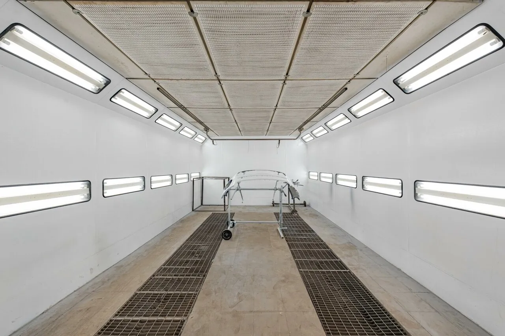
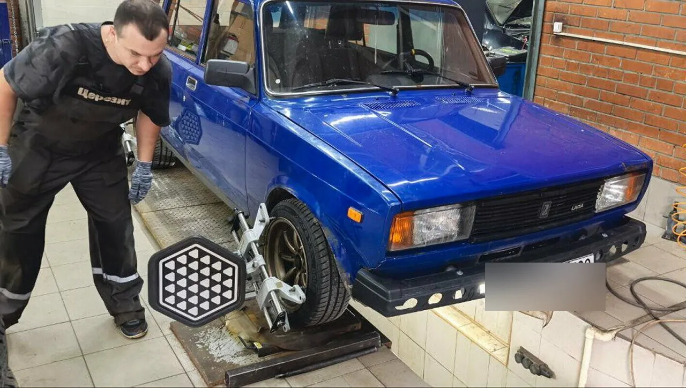
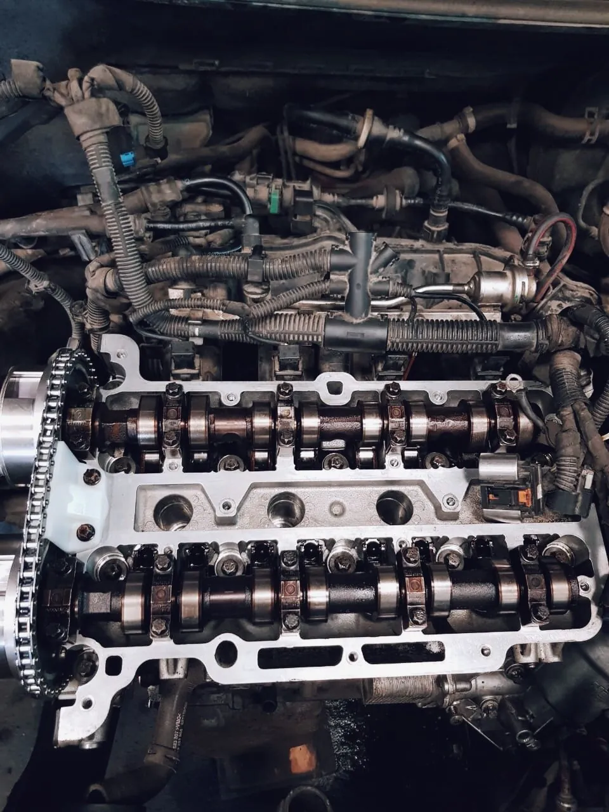
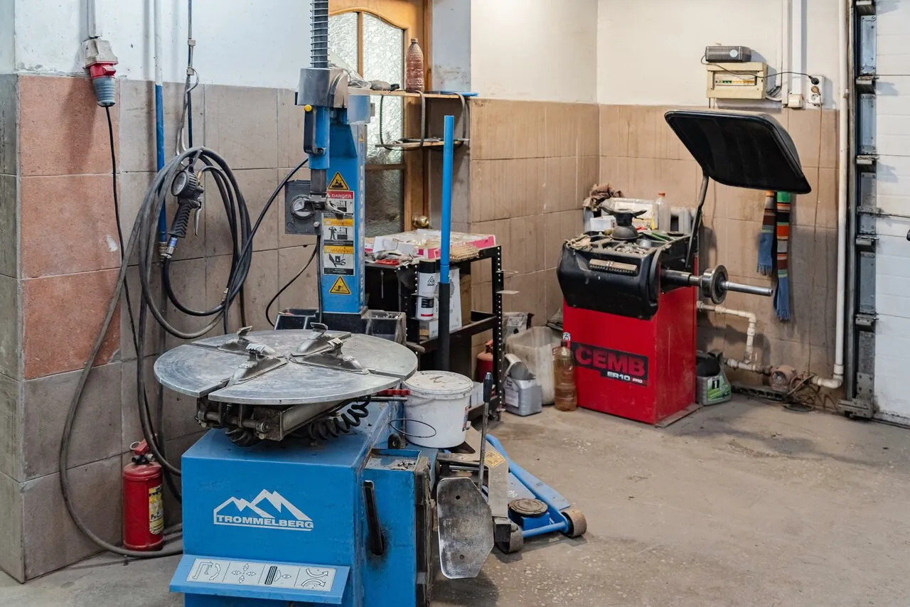
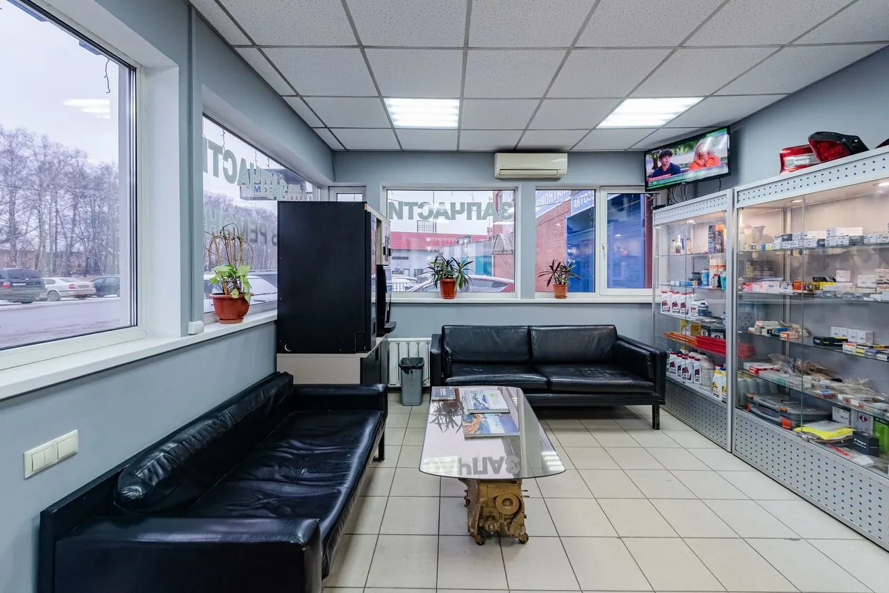
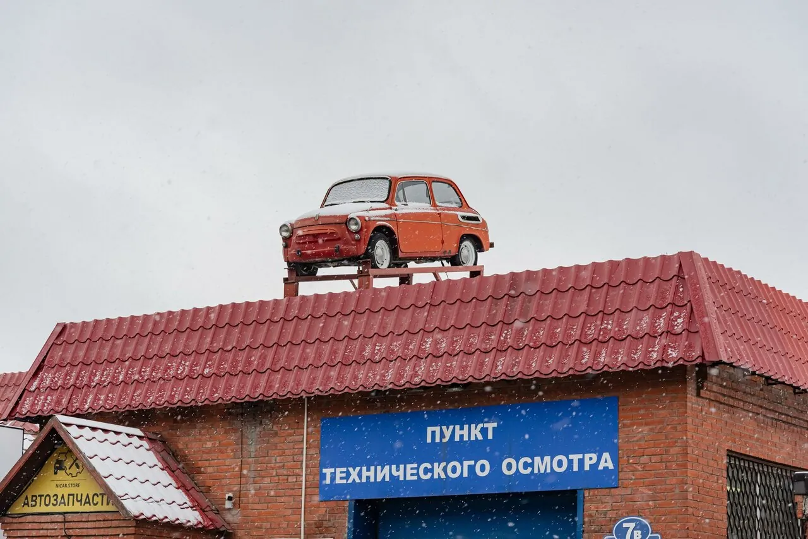
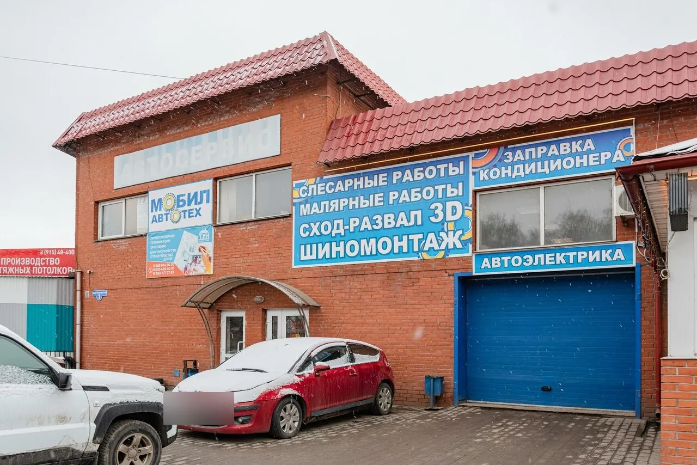

Кузов и покраска
«Красили бампер на квадроцикл, все сделано качественно , до этого обращались в другие сервисы(плохо сделали), данный сервис все исправил .»
МакарКоломна, пр. Станкостроителей, 7 · каждый день 9–19
Мобил Автотех – слесарный ремонт, кузов и покраска в камере, 3D-развал-схождение, шиномонтаж, автоэлектрика и кондиционеры. Все марки, включая коммерческие и американские.
«Первое что бросается в глаза это тачка на крыше, - мимо не проедешь.»Владас
Машина ждёт на крыше
Слесарный цех, малярная камера, стенд 3D-развала и шиномонтаж – в одном здании.

«Красили бампер на квадроцикл, все сделано качественно , до этого обращались в другие сервисы(плохо сделали), данный сервис все исправил .»
Макар
«Результат отличный: руль стоит ровно, машина едет прямо, без уводов.»
Дмитрий П.
«Нашли причину, которую проигнорировали в другом сервисе.»
Александр С.«Паял плату приборки на киа РИО после 13 лет пробега, заняло 20 минут, очень быстро и качественно.»
Михаил Власов
«нужно было продиагностировать и заправить кондиционер, сделали быстро и качественно.»
Фёдор ПронинЧетыре случая из отзывов на Яндекс Картах – словами самих клиентов.
«Электрик Валерий починил кондиционер, который не смогли починить в 4 других сервисах.»
Юлия«В общем помыли радиатор печки без съёма.» «Приговаривали замену радиатора со сьемом торпеды»
Сергей Фадейкин, 2019«Приехала с перегоревшей лампочкой, думала, что придется долго ждать. Но всё сделали буквально за 10 минут.»
Марина Фролова«Не по наслышке знаю когда приезжаешь в сервис на маленькой машинке делать не хотят. В этом сервисе всё окей.»
Сергей Ч.«Покажет, расскажут, предложат несколько вариантов решения проблем.»
Давид Каличава«Цены адекватные, озвучивают заранее.»
Алексей Зимбицкий«Твои данные сохраняются в компьютере, что очень удобно при последующих посещениях»
Светлана Шишкина«всё было сделано во время и качественно с предоставлением платёжных документов.»
Татьяна П.
«В зоне ожидания комфортно: кофе, телевизор.»
Дмитрий П.«при автомастерской имеется автомойка!»
Михаил АмусовПрайса в открытом доступе пока нет. Стоимость назовут по телефону до начала работ.
Гарантия на работы: {{условия гарантии}}
4,5374 оценки и 139 отзывов на Яндекс Картах
Обратился в «Мобил‑Автотех» для регулировки сход‑развала — машина стала уводить влево, да и резина изнашивалась неравномерно. Шиномонтаж тоже на уровне. В зоне ожидания комфортно: кофе, телевизор. Очень доволен сервисом. Результат отличный: руль стоит ровно, машина едет прямо, без уводов. Большое спасибо команде «Мобил‑Автотех» за профессионализм!
Хороший сервис. Мастер д. Виктор устранил все неисправности. Электрик Валерий починил кондиционер, который не смогли починить в 4 других сервисах. Очень вежливые сотрудники. Всё объяснили, показали, рассказали, помогли с выбором запчастей. Огромная благодарность.
Обратился в данный автосервис с проблемой что печка дула еле тёплым воздухом. Оставил автомобиль, а вечером забрал и печка жарила нереально просто. Отдал 1200 рублей + долили антифриз. В общем помыли радиатор печки без съёма. Спасибо Виктору Анатольевичу усатому механику. В Коломне ни один сервис не хотел связываться с моей проблемой. Приговаривали замену радиатора со сьемом торпеды
Долго искал нормальный сервис. Наконец то нашёл. Нашли причину, которую проигнорировали в другом сервисе. Всё делают быстро, качественно, по хорошей цене. И отремонтируют и покрасят и дельный совет дадут. Спасибо. Рекомендую.
Ремонтировала автомобиль в этом сервисе, сомневаясь, что проблема будет решена. Но в итоге всё было сделано во время и качественно с предоставлением платёжных документов. Одназначно рекомендую: здесь вас встретят профессионалы и просто неравнодушные люди. Цены на работу и запчасти не завышены
Первое что бросается в глаза это тачка на крыше, - мимо не проедешь. Сколько делал обслуживание - всегда оставался доволен, как качеством, так и ценами за оказываемые услуги. Персонал не слишком торопливый, но свою работу знает, лишних работ не навязывает, где надо всегда смажут и тп. Сход-развал присутствует, мастер Андрей мастер своего дела, тихо и спокойно настроит, даже оглянуться не успеешь. В общем клиентоориентированный сервис. Молодцы
Ребята молодцы нужно было продиагностировать и заправить кондиционер, сделали быстро и качественно. Ценник приятный, конкуренты предложили дороже. Ребят категорически рекомендую.
Приезжал на развал-схождение, приняли сразу, сделали на отлично!!!! По стоимости очень комфортно(есть с чем сравнить). Отдельная благодарность мастеру Андрею!!
Хороший сервис, пкачественно, не дорого. Покажет, расскажут, предложат несколько вариантов решения проблем. Обслуживают только тут. Рекомендую!
Хочу поблагодарить электрика из автосервиса! Приехала с перегоревшей лампочкой, думала, что придется долго ждать. Но всё сделали буквально за 10 минут. Качество на высоте — фары горят ярко, дорогу видно отлично. Теперь только к вам!
Я доволен. Обслуживаюсь у них всегда. Отношение хорошее. Цены адекватные. У меня матиз - приезжаю и делают всё на отлично и что самое главное нет обмана и разводняка. Не по наслышке знаю когда приезжаешь в сервис на маленькой машинке делать не хотят. В этом сервисе всё окей.
Красили бампер на квадроцикл, все сделано качественно , до этого обращались в другие сервисы(плохо сделали), данный сервис все исправил . РЕКОМНДУЮ


Открыть на Яндекс КартахМаршрут до техцентра